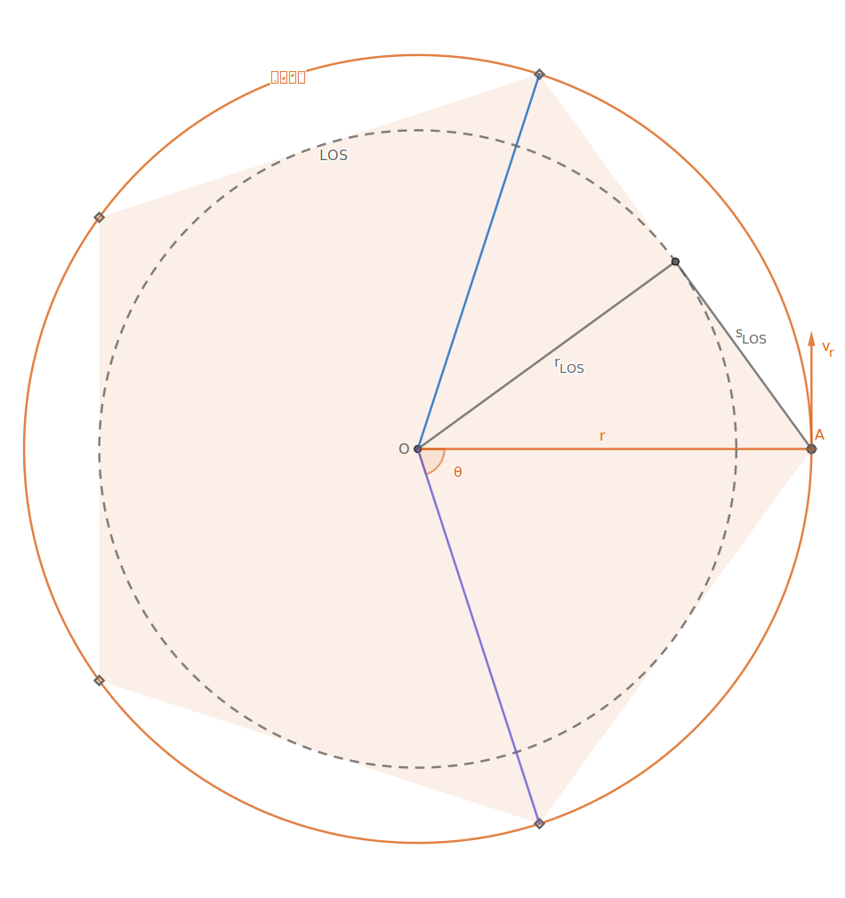

利用轨道共振在圆轨道等距部署卫星的原理
计算表
可直接使用的在线计算表
速查公式
输入参数

\begin{align}
&R && 赤道半径\\
&\mu && 标准重力参数\\
&h_r && 目标轨道高度/相切点高度\\
\end{align}
部署方式

\begin{align}
&n && 部署数量(间隔份数)\\
&x && 每几圈部署一次\\
&y && 每次部署间隔
\end{align}
中间常数

\begin{align}
&r = h_r + R && 目标轨道半径\\
&k = \frac{\mu}{4\pi^2} && 开普勒常数\\
&\eta = \frac{T_a}{T_r} = \frac{y}{xn}
&&周期比例常数\left\{\begin{array}{l}
n > 1 & 大于1才有意义\\
x,y,n \in \mathbb{N}^* & 正整数\\
(x,y,n) = 1 & 互质\\
\end{array}\right.
\end{align}
结果

\begin{align}
T_r &= \sqrt{\frac{r^3}{k}} && 目标轨道周期\\
T_a &= T_r \eta && 部署轨道周期\\
h_{a1} &= h_r && 相切点高度\\
h_{a2} &= r(2\eta^\frac{2}{3} - 1) - R && 对向点高度\\
v_r &= \sqrt{\frac{\mu}{r}} && 目标轨道速度\\
v_a &= v_r \sqrt{(2 - \frac{1}{\eta^\frac{2}{3} })} && 部署轨道相切速度\\
\Delta v &= \left| v_r - v_a \right| && 速度变化量
\end{align}
额外

\begin{align}
s_{LOS} &= 2(h_r + R) \sin \frac{\pi}{n} && 相邻位直线距离\\
h_{LOS} &= (h_r + R)\cos \frac{\pi}{n} - R && 可目视LOS高度\\
&\Downarrow \\
h_r &= \frac{s_{LOS}}{2\sin \frac{\pi}{n}} - R\\
h_r &= \frac{h_{LOS} + R}{\cos \frac{\pi}{n}} - R
\end{align}
公式推导
通用常数
一些公理性质的定义和常数
通常使用 相对高度 而不是 轨道半径 来描述 轨道高度

\begin{align}
& R && 赤道半径|海拔高度\\
h &= r-R && 轨道高度\\
\end{align}

\begin{align}
\mu &= GM && 标准重力参数\\
k &= \frac{\mu}{4\pi^2} && 开普勒常数\\
\end{align}
开普勒第三定律
半长轴的立方 与 周期的平方 比值为 常数

\begin{align}
k &= \frac{a^3}{T^2} && 开普勒第三定律\\
T &= \sqrt{\frac{a^3}{k}} && 周期\\
a &= \sqrt[3]{kT^2} && 半长轴\\
\end{align}
同时可以衍生得到对于 同一中心天体 而言 不同环绕轨道 的 比例关系

\begin{align}
\frac{T_1}{T_2} &= (\frac{a_1}{a_2})^{\frac{3}{2}} && 周期比\\
\frac{a_1}{a_2} &= (\frac{T_1}{T_2})^{\frac{2}{3}} && 周期比\\
\end{align}
目标轨道-正圆轨道
正圆轨道是椭圆轨道的简化
正圆轨道参数:

\begin{align}
v &= \sqrt{\frac{\mu}{r}} && 速度\\
T &= \sqrt{\frac{r^3}{k}} && 周期\\
\end{align}
正圆轨道速度处处相等
等分圆 即可 等分轨道周期 并构成 内接正多边形

正多边形 顶点间弧度 为 轨道相位差

\begin{align}
\theta &= \frac{2\pi}{n} && 相位差\\
T_{r_\theta} &= \frac{T_r}{n} && 周期间隔\\
\end{align}\\
最小LOS轨道
LOS=>Line of Sight/视距通信
视距通信需要两点连线无遮挡
两点连线的中点距离圆心最近
该点到圆心距离为当前 部署方式 下的 容忍半径

\begin{align}
\theta' &= \frac{\theta}{2} = \frac{\pi}{n} && 半相位差\\
s_{LOS} &= r \sin \theta' && 半目视距离\\
r_{LOS} &= r \cos \theta' \{\ge R赤道半径\} && 容忍半径\\
r^2 &= r_{LOS}^2 + s_{LOS}^2 && 长度关系\\
\end{align}
赤道半径大于容忍半径时所有部署点都处于遮挡状态而失效
游戏宽容设计: 某个深度以内的地表就像透明的一样
允许玩家存在较大的施工误差
容忍半径 与 目标半径 之比为 常数
以此可以简单反求 目标半径

\begin{align}
\varphi &= \cos \theta' = \cos \frac{\pi}{n}\\
r &= \frac{r_{LOS}}{\varphi}\\
\end{align}
显然 容忍半径 最小只能是 赤道半径
此时目标轨道称为 最小LOS轨道

r_{min} = \frac{R}{\varphi}
扣除 赤道半径 即为 最小LOS轨道高度

h_{min} = R(\frac{1}{\varphi} - 1)
部署轨道-椭圆轨道
椭圆是天体轨道中最常见的
椭圆轨道参数:

\begin{align}
v_t &= \sqrt{\mu (\frac{2}{r_t} - \frac{1}{a})} && 速度\\
T &= \sqrt{\frac{a^3}{k}} && 周期\\
\end{align}
构造一个椭圆长轴顶点与正圆相切并且其中一个焦点为正圆圆心

假设两个轨道各有一点同时从切点处同向出发
令椭圆轨道的质点在运行一周回到切点的时候
这时正圆轨道上的质点还未完成一周
求椭圆轨道半长轴
首先得到它们的 周期关系
比值为 常数

\left\{\begin{align}
T_a &= T_{A^-}\\
T_r &= T_{A^-} + T_{r_\theta}
\end{align}\right.
\Rightarrow \frac{T_a}{T_r} = \frac{n-1}{n} = \eta
可用 开普勒第三定律 展开后求得 椭圆轨道半长轴

\begin{align}
\eta &= \frac{T_a}{T_r} = (\frac{a}{r})^\frac{3}{2}\\
\frac{a}{r} &= \eta^\frac{3}{2}\\
a &= r\eta^\frac{3}{2}
\end{align}
那么就可以得到 长轴顶点 的 距离 和 切点速度

\begin{array}{rml}
&r_a =\left\{\begin{array}{l}
r\\
2a - r\\
\end{array}\right.\\
&v_a = \sqrt{\mu (\frac{2}{r} - \frac{1}{a})}
\end{array}
并求出切点处的 Δv
\begin{align}
\Delta v &= v_r - v_a\\
&= \sqrt{\frac{\mu}{r}} - \sqrt{\mu (\frac{2}{r} - \frac{1}{a})}
\end{align}
外切轨道
还有另一种类似的情况
椭圆轨道的质点回到切点的时候
正圆轨道的质点也完成了一周并且额外行进了一个分布间隔
我们可以称它为 滞后部署轨道
相对的上一个情况则为
超前部署轨道

只需要修改一下周期比中的正负号

\eta = \frac{n+1}{n}
可以发现切点距离依然是正圆半径
长轴顶点 的 距离 和 切点速度 公式相同
参数推广
显然部署轨道参数由 周期关系 控制, 重新整理算式
正圆轨道均分n份后
相切的正圆轨道行进了若干份均分间隔, 同时椭圆轨道行进若干圈
可以得到 通用 的 周期比例常数

\begin{align}
&\left\{\begin{array}{rl}
t_A &=& x T_a\\
t_A &=& y T_{r_\theta}
\end{array}\right.
从切点运行到A点的时间\\
&\begin{array}{rl}
x T_a &=& y \frac{T_r}{n}\\
\frac{T_a}{T_r} &=& \frac{y}{xn} = \eta
\end{array}
\end{align}
注意: 分式不是最简时, 部署结果与预期不符
比如这两种情况
原定部署6份, 每2圈部署一个, 部署间隔2份 最后上只部署了3份
同时发现两式的值相等
也就是说这两个部署方案用的是同一个椭圆转移轨道

可以简单得到几个特征结论
- 分式的值决定了转移轨道的参数
- 同一个值通过拆分分母为
x和n获得不同的部署效果 y和xn互质时,n为最终部署数量

\left\{\begin{align}
&n > 1 && 部署数量大于1才有意义\\
&x,y,n \in \mathbb{N}^* && 系数都是正整数\\
&(x,y,n) = 1 && 系数互质\\
\end{align}\right.
应用公式
实际应用场景中首先需要 目标轨道高度或周期 以确定 目标轨道半径

\left\{\begin{align}
h_r &= r - R\\
T_r &= \sqrt{\frac{r^3}{k}}
\end{align}\right.
根据 部署方式 确定关键的 周期比例常数
也可以反过来说这里的 系数描述了部署方式
当部署轨道完成 x圈 时, 目标轨道的上一个部署点行进了 y份间隔, 最后部署n个卫星

\eta = \frac{T_a}{T_r} = \frac{y}{xn}
\left\{\begin{align}
&n > 1 && 部署数量大于1才有意义\\
&x,y,n \in \mathbb{N}^* && 系数都是正整数\\
&(x,y,n) = 1 && 系数互质\\
\end{align}\right.
得到 部署轨道周期 和 长轴顶点高度

\begin{array}{l}
T_a = T_r \eta\\
\left\{\begin{align}
h_{a1} &= r - R &&相切点\\
h_{a2} &= r(2\eta^\frac{2}{3} - 1) - R &&对向点
\end{align}\right.
\end{array}
最后得到圆轨所需速度差
\Delta v = \sqrt{\frac{\mu}{r}}(1 - \sqrt{2 - \frac{1}{\eta^\frac{2}{3} }})